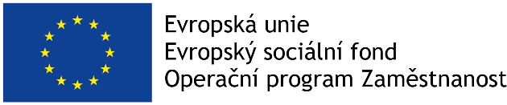

Služba šitá na míru
Partneři projektu

Projekt Kanceláře veřejného ochránce práv (dále jen „KVOP“) „Služba šitá na míru“ si klade za cíl zajistit rovné příležitosti mužů a žen nejen v této organizaci, ale chce současně podpořit prosazování rovných příležitostí mužů a žen ve státní službě a zvýšit informovanost zaměstnanců a zaměstnankyň státní služby o jejich právech v oblasti slaďování osobního, rodinného a pracovního života.
Zlepšení podmínek rovnosti žen a mužů v KVOP napomůže zefektivnění výkonu věcné agendy veřejné ochránkyně práv v oblasti ochrany osob před diskriminací a prosazování práva na rovné zacházení.
Hlavními aktivitami projektu jsou genderový audit, výzkum zaměřený na slaďování osobního, rodinného a pracovního života zaměstnanců a zaměstnankyň ve státní službě a osvěta zaměstnanců a zaměstnankyň. Výstupy z auditu a výzkumu představí mezinárodní konference a budou také prezentovány na workshopu pro vedoucí pracovníky a pracovnice veřejné správy.
Projekt Služba šitá na míru s reg. č. CZ.03.1.51/0.0/0.0/15_027/0005638 je spolufinancován prostředků ESF prostřednictvím Operačního programu Zaměstnanost.
V roce 2017 Kancelář veřejného ochránce práv (dále jen KVOP) realizovala v rámci zlepšování podmínek pro rovnost žen a mužů v KVOP jednu z klíčových aktivit projektu Služby šité na míru a to genderový audit. Jeho výsledky spolu s následnými přijatými doporučeními naleznete zde:
- Závěrečná zpráva genderového auditu Kanceláře veřejného ochránce práv (1.5 MB, Adobe Acrobat dokument)
Další realizovanou klíčovou aktivitou KVOP v tomtéž roce byla analýza stavu zajišťování rovných příležitostí mužů a žen na ministerstvech ČR. Výzkum analyzuje aktuální stav podmínek pro slaďování pracovního, osobního a rodinného života zaměstnanců a zaměstnankyň ve státní službě a postavení resortních koordinátorů a koordinátorek pro rovnost žen a mužů ve struktuře ministerstev. Závěrečnou zprávu z výzkumu, která je součástí činnosti ochránce v roli národního orgánu pro rovné zacházení a ochranu před diskriminací naleznete zde:
„V roce 2018 vznikly v rámci klíčové aktivity Osvěta v oblasti slaďování rodinného, osobního a pracovního života další materiály. Byl vydán Sborník z mezinárodní konference, jehož českou a anglickou verzi naleznete zde:
- Slaďování pracovního, osobního a rodinného života ve státní službě (2018) (1.4 MB, Adobe Acrobat dokument)
- Work-life Balance in the Public Sector (2018) (1.3 MB, Adobe Acrobat dokument)
A pro potřeby zaměstnanců a zaměstnankyň ve státní službě i zaměstnanců a zaměstnankyň obecně, byly vypracovány letáky, které přehledně obsahují informace nejen o jejich právech, ale i o povinnostech zaměstnavatelů v oblasti slaďování osobního a pracovního života. Obě varianty letáků naleznete zde:
- Práce nebo rodina? Chtějme obojí. (179 kB, Adobe Acrobat dokument)
- Práce ve státní službě nebo rodina? Chtějme obojí. (181.1 kB, Adobe Acrobat dokument)
Pro zaměstnance a zaměstnankyně KVOP byl zpracován ucelený a přehledný materiál zaměstnaneckých benefitů, které KVOP poskytuje. Materiál naleznete zde:
- Benefity pro slaďování pracovního a soukromého života. (352.7 kB, Adobe Acrobat dokument)
Současně, pro sdílení zkušeností, byl sestaven materiál, v němž zaměstnanci a zaměstnankyně KVOP v běžných či řídicích pozicích popisují své pozitivní zkušenosti se slaďovacími opatřeními. Materiál naleznete zde:
- Příběhy o slaďování pracovního a soukromého života v kanceláři ombudsmana. (1.6 MB, Adobe Acrobat dokument)
V návaznosti na zjištění v rámci analýzy stavu zajišťování rovných příležitostí mužů a žen na ministerstvech ČR vydala ombudsmanka doporučení, které můžete nalézt zde:
- Opatření pro sladění rodinného a osobního života s výkonem státní služby. (1.6 MB, Adobe Acrobat dokument)